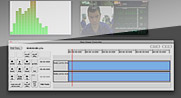
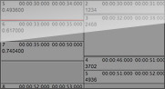
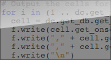

Introduction
OpenSHAPA is an open-source research tool that integrates and displays all kinds of data, letting you discover the big picture while remaining connected with raw data. OpenSHAPA will let you build and organize interpretations, and will assist with analysis.
Features
-
View Research Data
Integrate and visualize data from multiple sources - video, sound, and electronic data logs.
-
Reports
-
Plugins
-
Record Observations
Keyboard shortcuts let you navigate data quickly and iteratively, adding comments, codes, and interpretations.
-
Cross Platform
-
Open Source
-
Analyze & Order
Script higher-order analyses and, as needed, export for statistical analysis.
-
Scripting
-
Temporal Ordering
Contribute
There are lots of ways you can join the community and contribute to the development of OpenSHAPA:
Advocate
Did you enjoy using OpenSHAPA to explore your data? Spread the word, by telling your friends and colleagues.
Extend
See the wiki page on how to write scripts, create your own data viewer plugins and connect with the developers.